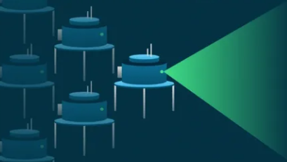
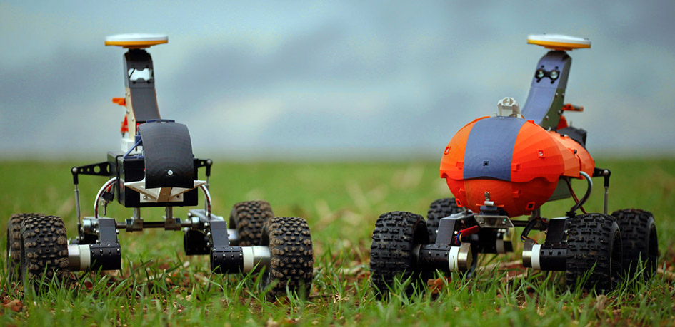

Machines and Minds: The AI Revolution
Swarm robotics is an approach to robotics that draws inspiration from the collective behavior of social insects such as ants, bees, and termites, as well as other animal groups like flocks of birds or schools of fish.
Swarm robotics is rooted in the principles of swarm intelligence, a field of artificial intelligence that studies the collective behavior of decentralized, self-organized systems.
It involves coordinating a large number of independent, relatively simple robots to work together toward a common goal. Instead of central control, the desired behavior emerges from local interactions between robots and their environment. This decentralized approach offers high redundancy and resilience, as the system continues to function even if some individual robots fail.

Swarm robotics offers a promising approach to solving complex problems by leveraging the collective intelligence of simple robots. Key applications include:

Swarm robotics offers a promising approach to solving complex problems by leveraging the collective intelligence of simple robots. Ongoing research and development are paving the way for widespread adoption in various applications.
Stay updated with the latest in artificial intelligence, robotics, and collective intelligence by following us on Instagram!
Follow @ewbsvce_insight